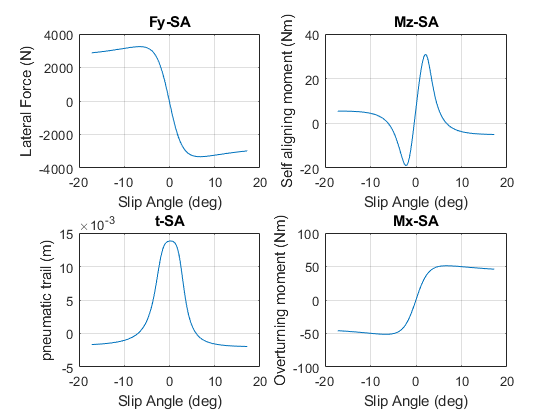

mfeval function
Home > User Guides >
mfeval evaluates Magic Formula 5.2, 6.1 or 6.2 tir files in steady state for series of input variables.
The formulation includes combined force/moment and turn slip calculations.
ISO-W (TYDEX W) Contact-Patch Axis System coordinate system is used in all calculations.
All the units will be SI (N,m,s,rad,kg)
Syntax
outMF = mfeval( parameterSource, inputsMF, useMode )Description
parameterSource refers to a MF-Tyre tyre property file (.TIR) containing all the Magic Formula coefficients or to a structure with all the parameters.inputsMF = [Fz kappa alpha gamma phit Vx P* omega*], where
- Fz = normal load on the tyre [N]
- kappa = longitudinal slip [dimensionless, -1: locked wheel]
- alpha = side slip angle [rad]
- gamma = inclination angle [rad]
- phit = turn slip [1/m]
- Vx = forward velocity [m/s]
- P* = pressure [Pa]
- omega* = rotational speed [rad/s]
P* and omega* are optional inputs. If they are not included pressure is constant and equal to the inflation pressure on the TIR file and the rotational speed is approximated.
useMode specifies the type of calculation performed:
- 1: combined force/moment calculation
- 2: combined force/moment calculation + turn slip
- +10: revoke alpha_star definition
- +20: include alpha_star definition
- +100: include limit checks
- +200: ignore limit checks
For normal situations turn slip may be neglected, meaning that the radius of the path is close to infinity (straight line). Alpha_star improves the accuracy of the model for very large slip angles and possibly backward running of the wheel. The limit checks verify that the inputs are inside the stable range of the model.
outMF consists of 30 columns:
- Fx: longitudinal force
- Fy: lateral force
- Fz: normal force
- Mx: overturning moment
- My: rolling resistance moment
- Mz: self aligning moment
- kappa: longitudinal slip
- alpha: side slip angle
- gamma: inclination angle
- phit: turn slip
- Vx: longitudinal velocity
- P: pressure
- Re: effective rolling radius
- rho: tyre deflection
- 2a: contact patch length
- t: pneumatic trail
- mux: longitudinal friction coefficient
- muy: lateral friction coefficient
- omega: rotational speed
- Rl : loaded radius
- 2b: contact patch width
- Mzr: residual torque
- Cx: longitudinal stiffness
- Cy: lateral stiffness
- Cz: vertical stiffness
- Kya: cornering stiffness
- sigmax: longitudinal relaxation length
- sigmay: lateral relaxation length
- Instantaneous cornering stiffness: dFy/dSA
- Kxk: slip stiffness
The equations coded in MFeval are published in the book: Title: Tire and Vehicle Dynamics Author: Hans Pacejka Edition: 3, revised Publisher: Elsevier, 2012 ISBN: 0080970176, 9780080970172 Length: 672 pages Link: https://www.elsevier.com/books/tire-and-vehicle-dynamics/pacejka/978-0-08-097016-5
And in the following paper: Besselink, I. J. M. , Schmeitz, A. J. C. and Pacejka, H. B.(2010) 'An improved Magic Formula/Swift tyre model that can handle inflation pressure changes', Vehicle System Dynamics, 48: 1, 337 — 352 DOI: 10.1080/00423111003748088 Link to this Article: http://dx.doi.org/10.1080/00423111003748088
Example
Create mfeval inputs
% Number of points nPoints = 200; % Pure lateral test case Fz = ones(nPoints,1).*3000; % vertical load (N) kappa = ones(nPoints,1).*0; % longitudinal slip (-) (-1 = locked wheel) alpha = linspace(-0.3,0.3, nPoints)'; % side slip angle (radians) gamma = ones(nPoints,1).*0; % inclination angle (radians) phit = ones(nPoints,1).*0; % turnslip (1/m) Vx = ones(nPoints,1).*16; % forward velocity (m/s) % Create a string with the name of the TIR file TIRfile = 'MagicFormula61_Paramerters.TIR'; % Select a Use Mode useMode = 111; % Wrap all inputs in one matrix inputs = [Fz kappa alpha gamma phit Vx];
Call mfeval solver
% Store the output from mfeval in a 2D Matrix
output = mfeval(TIRfile, inputs, useMode);
Plot results
% Extract variables from output MFeval. For more info type "help mfeval" Fy = output(:,2); Mz = output(:,6); Mx = output(:,4); SA = rad2deg(output(:,8)); % Convert to degrees t = output(:,16); figure subplot(2,2,1) plot(SA, Fy) grid on title('Fy-SA') xlabel('Slip Angle (deg)') ylabel('Lateral Force (N)') subplot(2,2,2) plot(SA, Mz) grid on title('Mz-SA') xlabel('Slip Angle (deg)') ylabel('Self aligning moment (Nm)') subplot(2,2,3) plot(SA, t) grid on title('t-SA') xlabel('Slip Angle (deg)') ylabel('pneumatic trail (m)') subplot(2,2,4) plot(SA, Mx) grid on title('Mx-SA') xlabel('Slip Angle (deg)') ylabel('Overturning moment (Nm)')